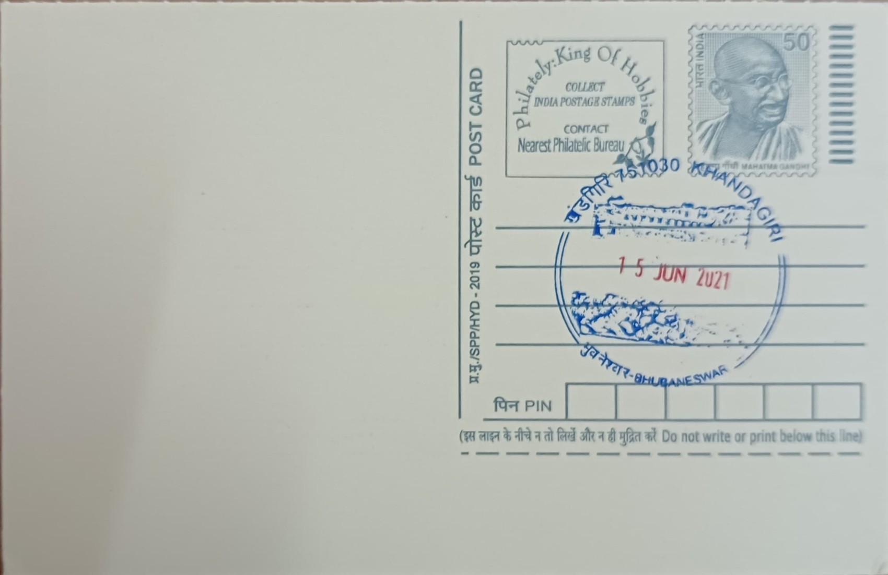

Khandagiri Caves and Elephant Sculpture
ଖଣ୍ଡଗିରି ଗୁମ୍ଫା ଓ ହାତୀ ଭାସ୍କର୍ଯ୍ୟ


The name Khandagiri, meaning "broken hill" or "hill of caves" in Odia, refers to the cluster of low sandstone hills on the western edge of Bhubaneswar that were hollowed out by Jain ascetics seeking shelter during the monsoon retreat. Tradition and inscriptional evidence link the site closely to its twin hill, Udayagiri, just across the road, both of which came to prominence under the patronage of the Chedi (Mahameghavahana) dynasty in the centuries before the common era. Unlike grand temple complexes with a single founding legend, Khandagiri's story is one of gradual excavation, as successive generations of monks and royal sponsors carved additional cells into the rock face over time, giving the hill its present honeycomb of chambers.
Khandagiri is classified as a centrally protected monument under the Archaeological Survey of India and is one of the earliest surviving examples of Jain rock-cut architecture in eastern India, predating most of the region's structural temples. Its significance rests on three overlapping strands: it is an archaeological record of early Jain monastic discipline, a living pilgrimage centre still visited by Digambara Jains, and an artistic archive of Kalinga-era craftsmanship. The hill houses roughly fifteen numbered caves, smaller in scale than the more elaborate excavations at Udayagiri, but notable for later additions including a nineteenth-century Jain temple built atop the hill, which keeps the site in continuous religious use rather than functioning purely as a historical ruin.
The bulk of the original excavation is attributed to the first century BCE, during the reign of the Chedi king Kharavela, whose patronage of Jainism is independently attested by the Hathigumpha inscription on neighbouring Udayagiri. The caves at Khandagiri are simple in plan, mostly single or double-chambered cells with low doorways designed for ascetic austerity rather than display, though several, such as the Ananta Gumpha, feature carved pillars, doorway reliefs, and figural panels added in subsequent centuries. Decorative work across the hill includes depictions of elephants, serpents, and floral motifs, executed in the same regional sculptural idiom seen at Udayagiri, reflecting a shared workshop tradition serving both hills.
A distinguishing feature of Khandagiri is the Ananta Gumpha, or Cave 3, named for the paired serpent figures carved on its door arches and notable for a veranda supported on three pillars with four separate entrances, along with wall carvings that include an auspicious swastika motif among its reliefs. Nearby, the Navamuni Gumpha takes its name from nine seated Tirthankara figures carved into its back and side walls, while the Barabhuji Gumpha is distinguished by a pair of twelve-armed deity sculptures reflecting later Hindu influence layered onto the originally Jain site. Elephant imagery recurs across several panels on the hill, continuing a motif most famously associated with the elephant-carved entrance of the Hathi Gumpha on Udayagiri, and underscoring the animal's recurring symbolic place in the region's rock-cut art.
Today the Udayagiri-Khandagiri complex is maintained jointly by the Archaeological Survey of India's Bhubaneswar circle, which oversees conservation of the rock-cut cells and their inscriptions, while the hilltop Jain temple is managed separately by the local Jain community that continues to use it for worship and an annual fair held around the Hindu festival of Shivaratri. The site is typically visited together with Udayagiri on a single ticketed circuit, and both hills feature in the state's published Jain heritage trails aimed at researchers and pilgrims alike. Set against the busier excavations across the road, Khandagiri functions today as the quieter, still-active half of the pairing, where archaeology and ongoing worship occupy the same hillside.
| Date of Introduction | June 15, 2021 |
|---|---|
| Address | Sub Postmaster, |
| Khandagiri SO, | |
| Khordha (dt.), Odisha - 751030. |